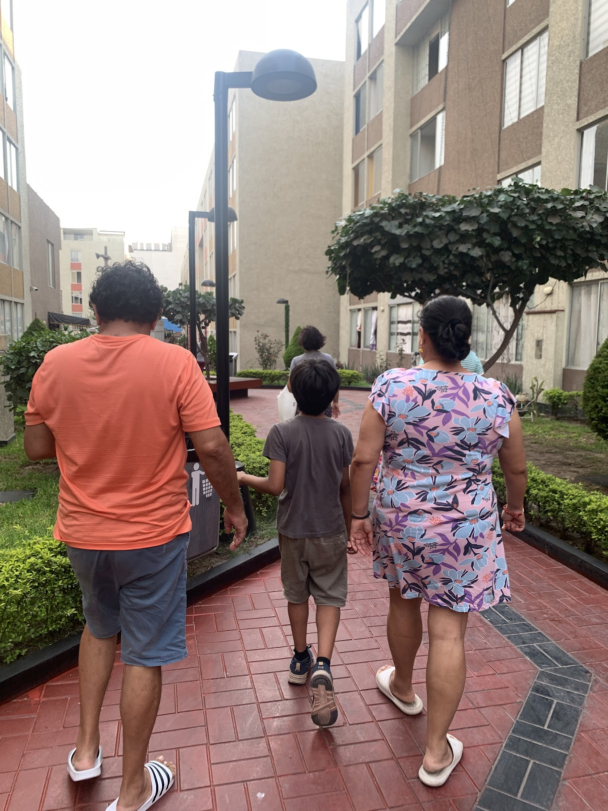
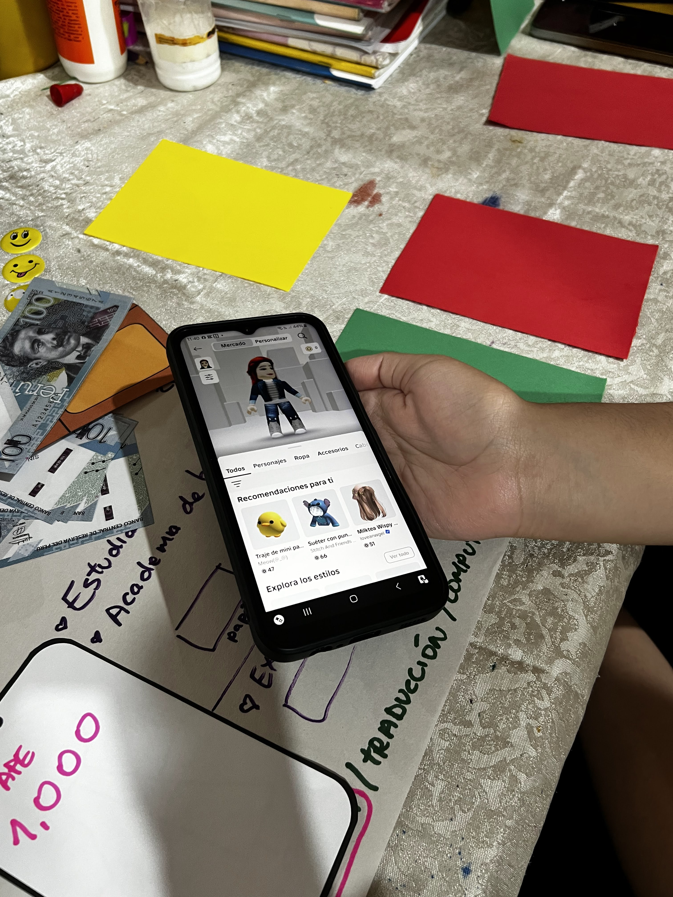
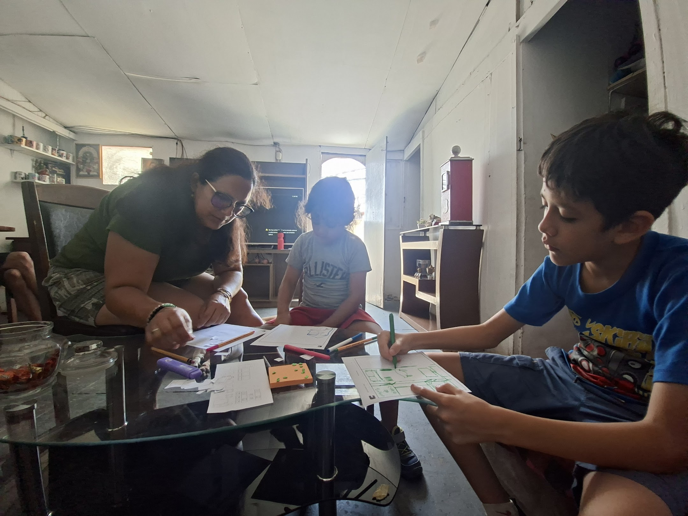

Diseñar para una tensión que no estaba mapeada
Una empresa del sector financiero quería evaluar la viabilidad cultural de un producto de educación financiera para niños en Perú. El problema no estaba en la tecnología, sino en entender cómo se aprende, se negocia y se desea el dinero dentro de la vida familiar.
En un contexto donde el dinero suele ser tema de adultos y las pantallas compiten con TikTok y Roblox, la pregunta era clara: ¿cómo diseñas un producto que enseñe a ahorrar a quien vive en la lógica de la recompensa inmediata?
Co-creamos un framework que integraba principios de economía conductual para sostener el engagement sin sacrificar el aprendizaje real. Validado en 12 sesiones de co-creación, el modelo permitió rediseñar la arquitectura de recompensas y el sistema de control parental con evidencia real de cómo los niños peruanos entienden, usan y negocian el dinero.
Shadowing domiciliario de 48 horas
Realizamos acompañamiento etnográfico de alta intensidad con 10 familias y usamos Diarios de Familia por WhatsApp para capturar micro-momentos de fricción cotidiana: las negociaciones invisibles entre padres e hijos alrededor del dinero, el ahorro y el gasto.

La representación importa más que el mensaje
Desciframos una doble tensión que las encuestas no podían capturar. Los padres querían constancia, concentración y progreso medible, mientras los niños respondían a recompensas inmediatas, novedad y dopamina rápida. A la vez, los padres querían supervisar cada movimiento, pero los niños necesitaban sentir que podían ejercer sus propias decisiones.

Un producto validado por las propias familias
Co-creamos un framework que integraba principios de economía conductual para sostener el engagement sin sacrificar el aprendizaje real. Validado en 12 sesiones de co-creación, el modelo le permitió al cliente rediseñar su arquitectura de recompensas y su sistema de control parental con evidencia real de cómo los niños peruanos entienden, usan y negocian el dinero.
